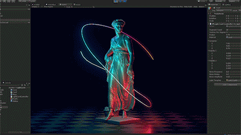
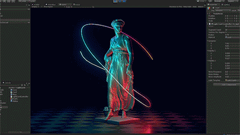
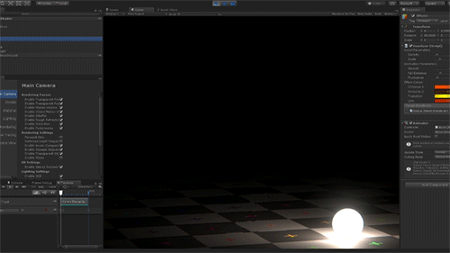
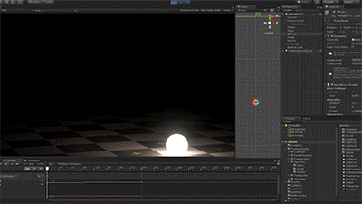
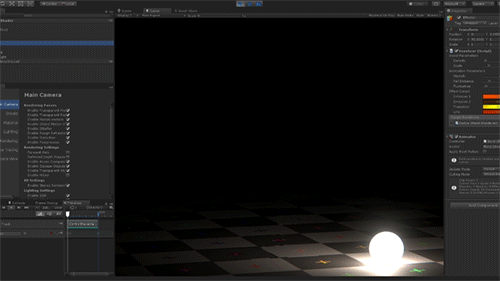
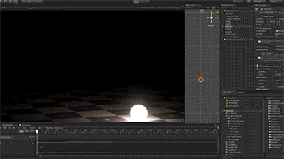

HDRP
High
Definition
Render
Pipeline
PS4 を
ベースラインにした
新しいレンダラー
メリットその１
ライティングが
むちゃくちゃ強力
FPTL
Fine
Pruned
Tiled
Lighting


半透明
Clustered Forward Shading
新しいライト形状
矩形ライト
線分ライト


 

すごく便利
弱点：
明るくなり過ぎがち


Volumetric Lighting
(Volumetric Fog)

メリットその２
標準シェーダーがむちゃくちゃ強力


Subsurface Scattering
表面下散乱


Thickness map
xNormal
Knald
Substance Painter

Anisotropy
異方性反射


Iridescence
虹色反射
Bent Normal Mapping


Displacement Mapping


Layered Material
レイヤー機能


メリットその３
カスタマイズに
フレンドリー
ソースコードが
GitHub 上に
公開されている
パッケージとして
独立した
バージョニング


今までのUnity
謎マクロ
謎プラグマが暗躍
#pragma surface surf Standard vertex:vert addshadow
void vert(inout appdata_full v, out Input data)
{
UNITY_INITIALIZE_OUTPUT(Input, data);
...
}
void surf(Input IN, inout SurfaceOutputStandard o)
{
...
}
関数、structを使った
C言語風の実装
汎用的な
シェーダーライブラリ

 



カスタムシェーダー
Lit.shader をコピペして改造
頂点いじるなら VertMesh.hlsl の辺りを改造
GBuffer いじるなら ShaderPassGBuffer.hlsl の辺りを改造
#define と
#include の塊
ホワイトボックス
なので諦める
ポイントは少ない
HDRP
導入検討の
ポイント
で、もう
完成してるの？
使っていいの？
謝辞